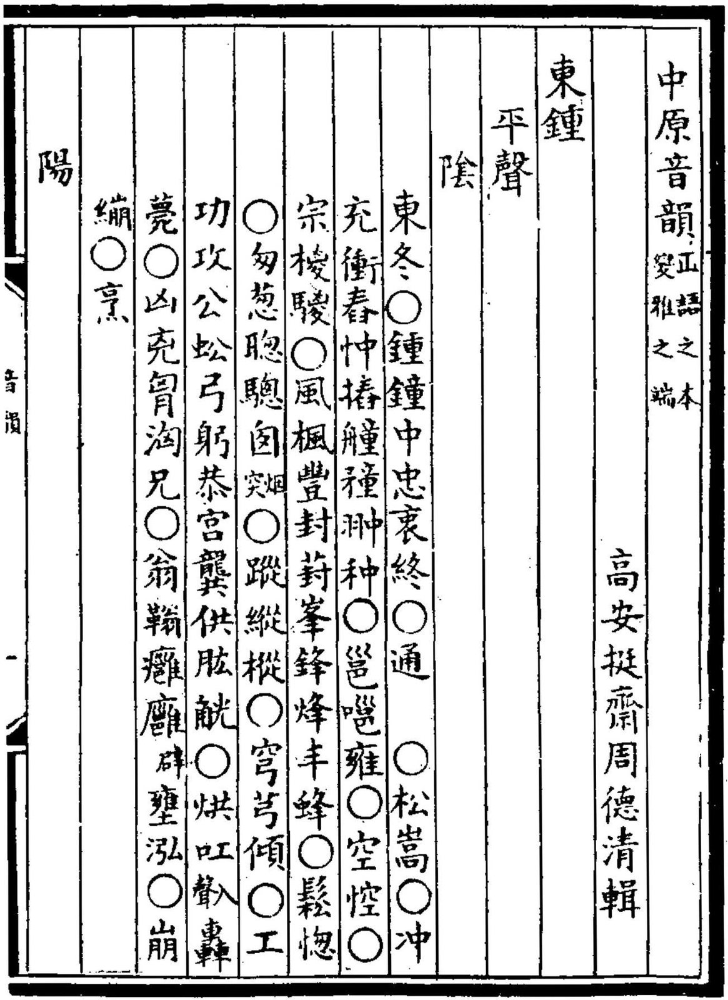
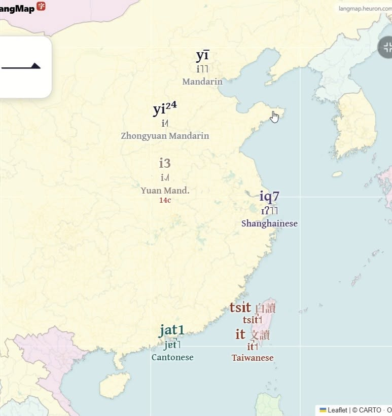

Sinosphere · · revised · Facebook post
A 1324 Rhyme Book Pins Down the Birth of Modern Mandarin, and It Was Written for Playwrights
- In 1324 the dramatist Zhou Deqing finished the Zhongyuan Yinyun, a rhyme book for writers of Yuan opera.
- It is the key document for the shift from Middle Chinese to early Mandarin.
- It shows the old entering tone, the syllables ending in -p, -t and -k, spread over the other three tones, at least in song.

Contents
A handbook for songwriters
In the mid-Yuan dynasty, the dramatist and prosodist Zhou Deqing (周德清) compiled a rhyme book:
中原音韻
Zhōngyuán Yīnyùn, "Sounds and Rhymes of the Central Plain"
He finished it in 1324. It was printed in 1341.
The purpose was practical. Librettists working on the hugely popular zájù (雜劇) operas needed to know what actually rhymed in northern speech, when it was sung.
So the book does something the older rhyme books did not. It sorts 5,866 characters into just 19 rhyme groups, from 東鍾 to 廉纖. There are no spelling formulas. Each set of homophones is simply listed together.
Look at the first page. The rhyme group 東鍾 comes first. Under it, the level tone 平聲 is already divided in two: 陰 and 陽.
Not a treatise. A working handbook, which is why it records real sound.
The tone that disappeared
For historical linguistics, this songwriters' manual turned out to be the decisive document for the shift from Middle Chinese (around 600 AD) to early modern Mandarin.
The key is the entering tone, 入聲 (rùshēng).
That fourth tone category of Tang and Song was not a pitch at all. It was the class of syllables ending in -p, -t or -k.
In the Zhōngyuán Yīnyùn, those syllables no longer have a tone of their own. They are listed under the other three tones:
| Character | Middle Chinese (Baxter) | 1324 | Mandarin today |
|---|---|---|---|
| 白 | baek | level (陽平) | bái |
| 十 | dzyip | level (陽平) | shí |
| 日 | nyit | departing (去) | rì |
| 木 | muwk | departing (去) | mù |
| 八 | peat | rising (上) | bā |
| 黑 | xok | rising (上) | hēi |
| 鐵 | thet | rising (上) | tiě |
The pattern is regular. Syllables with an old fully voiced initial went to the yángpíng level tone (陽平). Syllables with a nasal or l- went to the departing tone. Syllables with a voiceless initial went to the rising tone.
Gone, or only gone in song?
Most scholars take this as proof that the entering tone had already gone from northern speech by 1324, and that the tone system had reorganised into the four tones Mandarin has today.
But Zhou Deqing himself added a note of caution. He wrote that he spread the entering-tone syllables over the other tones to widen the rhymes for songwriting, and that in ordinary speech the entering tone was still distinguished.
Lu Zhiwei and others conclude that the entering tone had not yet completely disappeared.
There is another detail. The 1324 pattern is closer to today's Jiao-Liao Mandarin, on the Shandong and Liaodong peninsulas, than to Beijing. In Beijing, the voiceless group was later scattered among all four tones. That is why 八 is bā and 黑 is hēi today, not rising-tone syllables.
One character, seven centuries

The Han Map lets you see the change on a single character, 一, "one":
Yuan Mandarin (14th century): i3
Mandarin today: yī
Shanghainese: iq7
Cantonese: jat1
Taiwanese: it (literary), tsi̍t (colloquial)
Middle Chinese 一 ended in -t. Cantonese and Taiwanese still keep the stop. Shanghainese keeps a glottal stop, written -q.
Yuan Mandarin has lost it, and puts 一 in the rising tone, just as the rhyme book does with every voiceless entering-tone syllable. Modern Mandarin then moved it again, to yī.
Mandarin from the stage
It is striking that the key document of early Mandarin is a songwriter's manual, not a court dictionary.
The Guǎngyùn (廣韻, 1008) preserved Middle Chinese as a literary ideal.
The Zhōngyuán Yīnyùn shows what people were actually singing on stage three centuries later.
The first full record of Mandarin's four tones was written for the theatre.